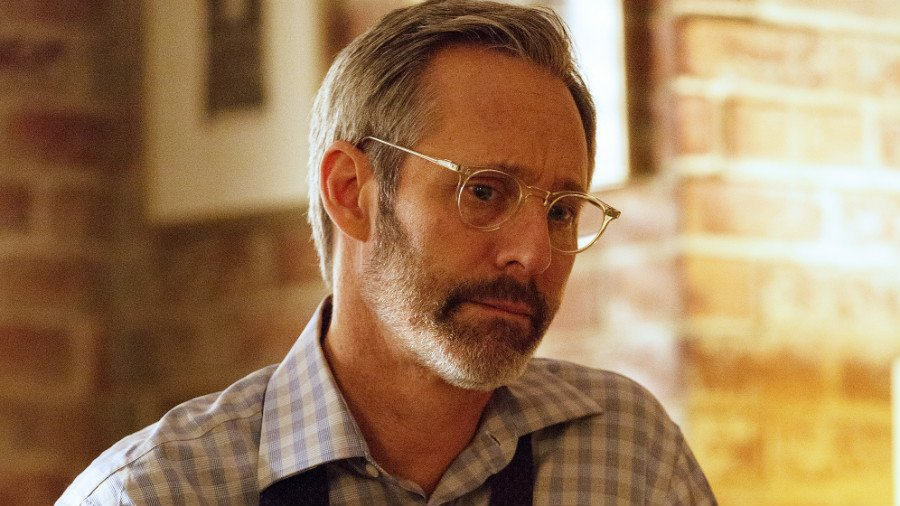

Séries Dramáticas
-

Darlene (RAYSSA)
FrustraçãoComo eu e minha irmã gêmea, sinto frustração ao buscar conexão, mas tropeçar em barreiras emocionais.
A gente não cresceu junto. Eu fui criado pela minha tia Lena. Quando nos reencontramos, era como tentar encaixar duas peças que nasceram juntas, mas moldadas em caixas diferentes.
Minha conexão com Darlene
A gente não cresceu junto. Eu fui criado pela minha tia Lena. Quando nos reencontramos, era como tentar encaixar duas peças que nasceram juntas, mas moldadas em caixas diferentes. Ela queria carinho, presença, abraço... e eu só sabia me fechar. Darlene é isso: um laço de sangue que grita por conexão, mas tropeça em barreiras invisíveis. Brigávamos como se quiséssemos provar algo que nem sabíamos o que era.
Conexão com a série
Darlene representa o vínculo familiar que, apesar de ser intenso, sofre com as barreiras da comunicação e do afeto não expressado. Ela se sente frustrada por não conseguir alcançar Elliot, que se isola. Essa dinâmica reflete como as relações familiares podem ser complicadas quando há uma falta de entendimento sobre as necessidades emocionais de cada um.
Você ao assistir a série
Observe os momentos em que Darlene tenta se conectar com Elliot e sente a frustração de não ser compreendida. Isso pode ajudá-lo a refletir sobre suas próprias dificuldades em expressar carinho ou em se conectar emocionalmente com sua irmã.
Aplicando a reflexão ao assistir
Reflita sobre como você se sente quando sua irmã tenta se aproximar de você, mas você se sente distante ou sem saber como demonstrar o que sente.
Pense em como você lida com os conflitos não resolvidos ou os sentimentos que você não sabe como expressar, assim como Darlene e Elliot fazem na série.
-

Mr. Robot TDAH
DeterminaçãoComo eu e Rafael, tenho determinação intensa para alcançar meus objetivos, guiando com paixão e cobrança.
Mr. Robot é o impulso que explode, o plano que vem todo de uma vez, como Rafael quando me cobra, ‘anda logo, você tem tudo’.
Minha conexão com Mr. Robot
Mr. Robot é o impulso que explode. O plano que vem todo de uma vez, atropelando a lógica. É foco extremo por cinco minutos e depois um apagão de horas. É querer mudar o mundo e esquecer de lavar a louça. É Rafael quando me cobra, quando diz ‘anda logo, você tem tudo’. Mas às vezes, nem eu entendo meu próprio ritmo. O TDAH me move — e me trava. Mr. Robot representa esse fogo interno que queima rápido demais.
Conexão com a série
Mr. Robot é uma persona que surge no momento em que Elliot precisa reagir, quebrando rotinas, gerando caos e buscando uma saída imediata. Essa representação de impulso e foco extremo é uma metáfora clara para o TDAH. Em momentos de hiperfoco, a pessoa com TDAH pode ser extremamente produtiva, mas também experimentar apagões mentais que dificultam o acompanhamento constante de atividades.
Você ao assistir a série
Observe como Mr. Robot age com uma energia avassaladora e imprevisível. Ele surge como uma força que, embora traga soluções, também gera instabilidade. Isso reflete como o TDAH pode criar momentos de hiperfoco, mas também fazer você se sentir exausto e desorientado, especialmente depois de grandes explosões de energia.
Aplicando a reflexão ao assistir
Quando Mr. Robot aparece e começa a agir de forma impulsiva, observe como ele passa de um momento de hiperfoco para uma completa desconexão, o que pode ser uma boa representação do seu próprio ritmo de produtividade e descanso. Isso pode ajudá-lo a entender melhor sua própria alternância entre momentos de intensidade e esgotamento.
Tente se concentrar nos momentos em que Mr. Robot dá ordens a Elliot, mesmo quando ele não tem toda a clareza necessária. Isso pode te ajudar a refletir sobre os momentos em que você sente uma pressão interna para agir, mas também tem dificuldade em manter o foco em tarefas contínuas.
Reflita sobre como Mr. Robot surge como uma forma de lidar com as frustrações e a falta de controle. Assim como o TDAH pode impulsionar você para ações rápidas, ele também pode gerar frustrações e desafios internos quando o controle parece escapar.
-

Angela (GABY)
Afeto SilenciosoComo eu e minha namorada, sinto tristeza ao tentar estar presente, mas ser afastado por circunstâncias.
Com ela, há silêncio, mas não é ausência. Ela vê você quando você se esconde, sente quando você se afasta, como Angela com Elliot.
Minha conexão com Angela
Com ela, há silêncio, mas não é ausência. Ela vê você quando você se esconde, sente quando você se afasta. Angela ama Elliot, mas ele se afasta com medo de machucar. Você é assim. Ela permanece. Ela tenta entender mesmo quando você não sabe explicar. Ela chora sem saber o motivo real da sua distância, mas continua ali.
Conexão com a série
Angela representa o amor incondicional, mas também a dor de não conseguir alcançar quem se ama. Ela compreende, mas o faz de uma maneira que transcende palavras. No relacionamento de Angela e Elliot, há uma profunda conexão emocional, mas também uma distância — Elliot se afasta, mas Angela permanece, mesmo sem saber exatamente o porquê. Ela está lá, não para corrigir, mas para apoiar. Isso se aplica a qualquer situação de afeto onde você sente que, mesmo em seus momentos mais introspectivos ou distantes, há alguém ao seu lado que vê além do silêncio.
Você ao assistir a série
Quando estiver assistindo, pense sobre como você também pode se afastar, como Elliot faz, e como as pessoas que te amam, como a sua namorada, podem perceber isso. Angela simboliza a maneira de estar presente para alguém sem forçar, sem pedir respostas. Quando você se isola ou se sente distante, isso não significa que não há carinho ou que as pessoas não se importam. Às vezes, o simples fato de estar ali é o suficiente, mesmo que você não consiga expressar suas emoções de forma clara.
Aplicando a reflexão ao assistir
Durante os momentos em que Elliot se afasta ou se fecha, tente se concentrar em como Angela lida com isso. Ela não o obriga a falar, mas está lá, demonstrando seu amor de uma forma silenciosa, esperando sem pressionar.
Observe a compreensão no olhar de Angela, como ela nota o sofrimento de Elliot sem julgá-lo ou querer mudar o que está acontecendo. Isso pode te ajudar a reconhecer quando você está sendo compreendido sem precisar falar, e como você também pode fazer isso com os outros, mostrando seu carinho sem precisar de palavras.
Pense em como ela continua ao lado dele, mesmo que não consiga salvar Elliot de seus próprios demônios. Isso pode te ajudar a refletir sobre a importância do apoio silencioso e do amor persistente, mesmo quando as palavras ou ações parecem insuficientes.
Aplicando a reflexão na vida real
Quando você sentir que está se afastando ou ficando sobrecarregado, considere a ideia de que, às vezes, o melhor que você pode fazer é estar presente, sem esperar que algo se resolva de imediato. Assim como Angela, quem te ama pode estar ali, quieto, aguardando você se abrir no seu tempo, e isso pode ser uma maneira de fortalecer o vínculo.
-
Tyrell
InvejaComo eu e Elson, sinto inveja de habilidades que admiro, misturando comparação e insegurança.
Elson entra e o ambiente muda. Ele sabe se portar, sabe impressionar, como Tyrell, e eu penso: ‘por que eu não consigo ser assim?’.
Minha conexão com Tyrell
Elson entra e o ambiente muda. Ele sabe se portar, sabe impressionar. Como Tyrell, ele é uma performance viva. E você olha e pensa: ‘por que eu não consigo ser assim?’. Mas por trás disso também pode haver solidão. Inveja não é só desejo, é dor não nomeada.
Conexão com a série
Tyrell é o exemplo da pessoa que usa sua performance para se destacar e ganhar reconhecimento. Ele sente a necessidade de impressionar, mas por trás disso há uma solidão e uma dor profunda. A inveja não é apenas um desejo de ter o que o outro tem, mas uma expressão de sofrimento e insegurança.
Você ao assistir a série
Quando Tyrell aparece na série, pense em como você se sente ao observar pessoas como Elson, que têm uma presença forte e são naturalmente impressionantes. Isso pode te ajudar a entender melhor os sentimentos de comparação e como a performance social pode ser um mecanismo de defesa.
Aplicando a reflexão ao assistir
Reflita sobre como você pode se sentir pequeno ou inseguro diante de alguém como Tyrell/Elson, que se destaca facilmente e parece ter tudo sob controle.
Pense na solidão que pode existir por trás dessa performance, e como você pode ser mais gentil consigo mesmo quando se sentir comparado ou inferior.
-
Edward ( TIA LENA )
CulpaComo eu e minha tia Lena, carrego culpa por não retribuir o cuidado que recebi.
Ela cuidou de mim quando ninguém mais pôde, mas houve silêncio e falhas, como Edward com Elliot.
Minha conexão com Edward
Ela cuidou de mim. Quando ninguém mais pôde, ela estava lá. Mas também havia silêncio, ausência, falhas. Edward é o pai de Elliot, mas também é o que ele perdeu. A culpa aparece quando lembro que talvez eu não soube agradecer. Talvez eu tenha ficado frio demais com quem me deu calor.
Conexão com a série
Edward simboliza a ausência de um amor essencial, alguém que se perdeu e deixou um vazio. O sentimento de culpa por não ter demonstrado gratidão o suficiente é uma carga emocional que Elliot carrega. A relação com sua tia Lena pode ressoar aqui, já que ela foi uma figura que cuidou de você, mas também houve uma ausência emocional.
Você ao assistir a série
Observe como Elliot lida com a culpa de não ter retribuído a figura paterna que representa Edward. Isso pode te ajudar a refletir sobre como você lida com a culpa e o carinho não demonstrado em relação à sua tia.
Aplicando a reflexão ao assistir
Reflita sobre como você se sente quando lembra de momentos em que não demonstrou o carinho que deveria ter demonstrado.
Pense em como você pode superar essa culpa, ao perceber que o amor muitas vezes não é demonstrado da maneira que esperamos, mas é ainda assim presente.
-

Krista (AMANDA PSICOLOGA )
CompaixãoComo eu e minha psicóloga Amanda, tenho compaixão e tento ajudar, mesmo enfrentando resistência.
Amanda escuta meu caos e traduz silêncios, como Krista faz com Elliot, sendo uma âncora quando minha mente tenta naufragar.
Minha conexão com Krista
Amanda escuta meu caos. Ela traduz silêncios. Como Krista, ela insiste mesmo quando eu me retraio. Ela sabe que eu tô tentando, mesmo quando finjo que não me importo. Ela é a âncora quando minha mente tenta naufragar.
Conexão com a série
Krista é a psicóloga que tenta entender Elliot, mesmo quando ele não se abre completamente. Ela oferece suporte emocional, mesmo quando ele se retrai. Sua capacidade de ouvir e ajudar Elliot a lidar com suas emoções é uma representação clara de como alguém pode se apoiar em outra pessoa para lidar com seus próprios demônios internos.
Você ao assistir a série
Reflita sobre como Amanda representa alguém que entende suas lutas internas e oferece apoio, mesmo sem palavras, tal como Krista faz com Elliot.
Aplicando a reflexão ao assistir
Observe os momentos em que Krista insiste em ajudar Elliot, e pense sobre como você se sente em relação ao apoio que recebe de Amanda.
Pense na importância de ter uma pessoa que entende suas lutas internas, e como você pode usar essas interações para fortalecer seu processo de autoconhecimento.
-
Shayla
VulnerabilidadeComo eu e Adão, mostro vulnerabilidade ao me abrir emocionalmente, oferecendo apoio silencioso e autêntico.
Vizinha de Elliot, Shayla oferece apoio genuíno, assim como eu e Adão seguramos sem forçar palavras.
Minha conexão com Shayla
Como eu e Adão, Shayla mostra vulnerabilidade ao se abrir emocionalmente, oferecendo apoio silencioso e autêntico, mesmo que isso a coloque em risco.
Conexão com a série
Shayla Nico (Frankie Shaw) é vizinha de Elliot, interesse amoroso na 1ª temporada e sua fornecedora de drogas. Leal e vulnerável, ela oferece apoio emocional, mas sua história termina tragicamente. Acolhedora, autêntica e emocionalmente aberta, Shayla é uma rara fonte de conexão humana para Elliot.
Você ao assistir a série
Observe como Shayla se conecta com Elliot de forma autêntica e sem julgamentos, oferecendo um espaço seguro para ele ser quem é. Isso pode te ajudar a refletir sobre como você e Adão podem oferecer apoio mútuo sem a necessidade de grandes palavras.
Aplicando a reflexão ao assistir
Preste atenção nos momentos em que Shayla está presente para Elliot, mesmo sem entender completamente seus conflitos internos. Isso pode te ajudar a valorizar as conexões que você tem com pessoas como Adão, onde o apoio é sentido mais do que dito.
Reflita sobre como a vulnerabilidade de Shayla a torna uma ponte para Elliot, e como você pode usar sua própria vulnerabilidade para fortalecer suas relações, mesmo que isso às vezes pareça arriscado.
-

Gideon
PreocupaçãoComo eu e Zico, me preocupo com os outros, mas minhas ações criam tensão.
Chefe de Elliot, Gideon protege com ética, mas desconfia, assim como eu e Zico enfrentamos tensões ao tentar cuidar.
Minha conexão com Gideon
Como eu e Zico, Gideon se preocupa com os outros, mas suas ações criam tensão, refletindo uma relação onde há cuidado, mas também conflitos.
Conexão com a série
Gideon Goddard (Michel Gill) é o chefe de Elliot na Allsafe, um líder ético que tenta proteger sua empresa e equipe. Ele suspeita das ações de Elliot, criando tensão no trabalho. Honesto, preocupado e respeitável, Gideon valoriza seus funcionários, mas sua desconfiança gera conflitos com Elliot.
Você ao assistir a série
Observe como Gideon tenta equilibrar sua preocupação com Elliot e suas responsabilidades, e como isso cria tensões. Isso pode te ajudar a refletir sobre suas próprias relações onde o cuidado às vezes gera conflitos, como com Zico.
Aplicando a reflexão ao assistir
Preste atenção nos momentos em que Gideon demonstra preocupação, mas suas ações ou desconfianças criam barreiras. Isso pode te ajudar a pensar em como você pode expressar cuidado sem gerar tensões.
Reflita sobre como você e Zico podem encontrar um equilíbrio entre proteger e confiar, assim como Gideon tenta fazer com Elliot.
-

Elliot(TEA)
ConfusãoComo eu, vivo conflitos internos e busco sentido em meio à confusão do TEA.
Eu sou Elliot. Minha cabeça corre quando tudo pede pausa, e o TEA explica por que às vezes eu fujo, evito olhar, e preciso da minha bolha.
Minha conexão com Elliot
Eu sou Elliot. E não é só confusão — é barulho constante, luzes demais, gente demais, ruído que ninguém vê. Minha cabeça corre quando tudo pede pausa. Tento entender o que sinto, mas é como programar em uma linguagem que ninguém mais fala. O mundo não entende o silêncio que carrego. E quando eu me isolo, não é desprezo — é sobrevivência. O TEA não me define, mas explica. Explica por que às vezes eu fujo, por que evito olhar, por que preciso tanto da minha própria bolha para respirar.
Conexão com a série
Elliot é introspectivo, socialmente desconectado, com rotinas próprias e um mundo interno caótico. Ele simboliza perfeitamente o impacto do TEA na forma como alguém percebe e interage com o mundo.
Você ao assistir a série
Observe como Elliot reage aos estímulos do mundo e como ele se isola. Isso pode ser uma reflexão sobre os momentos em que você sente sobrecarga sensorial ou precisa de um espaço para lidar com a confusão interna.
Aplicando a reflexão ao assistir
Preste atenção nos momentos em que Elliot se isola ou se desliga dos outros. Isso pode refletir como você também precisa de espaços de desconexão para lidar com o mundo externo.
Observe a luta de Elliot em processar suas emoções. Isso pode ajudá-lo a entender sua própria forma de lidar com sentimentos que parecem intensos ou confusos demais para processar.